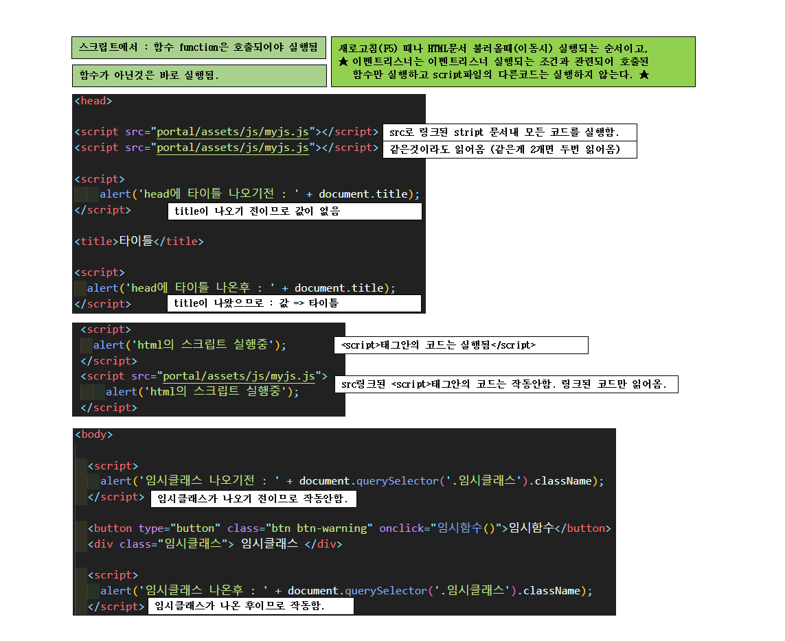
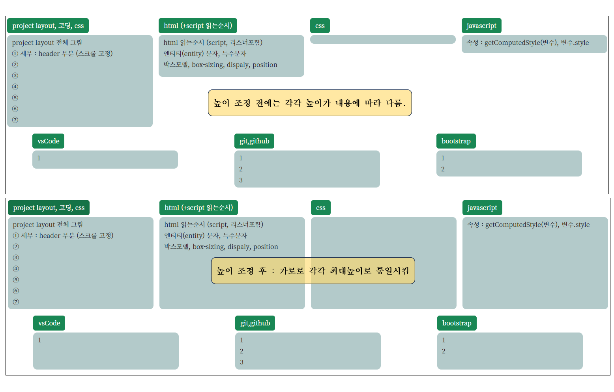
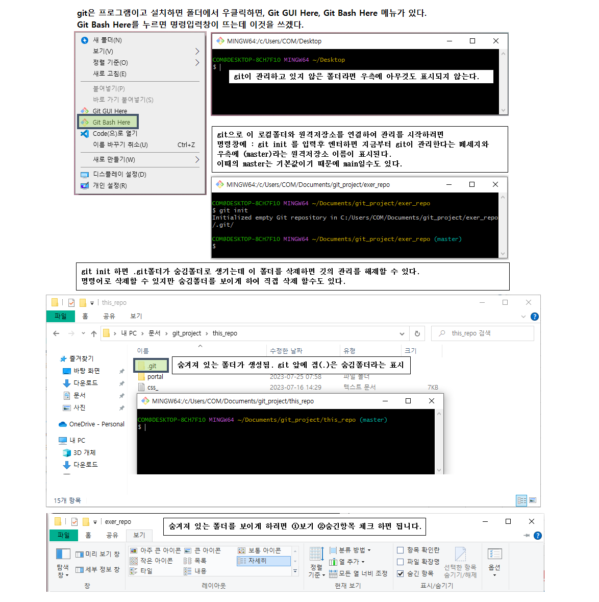
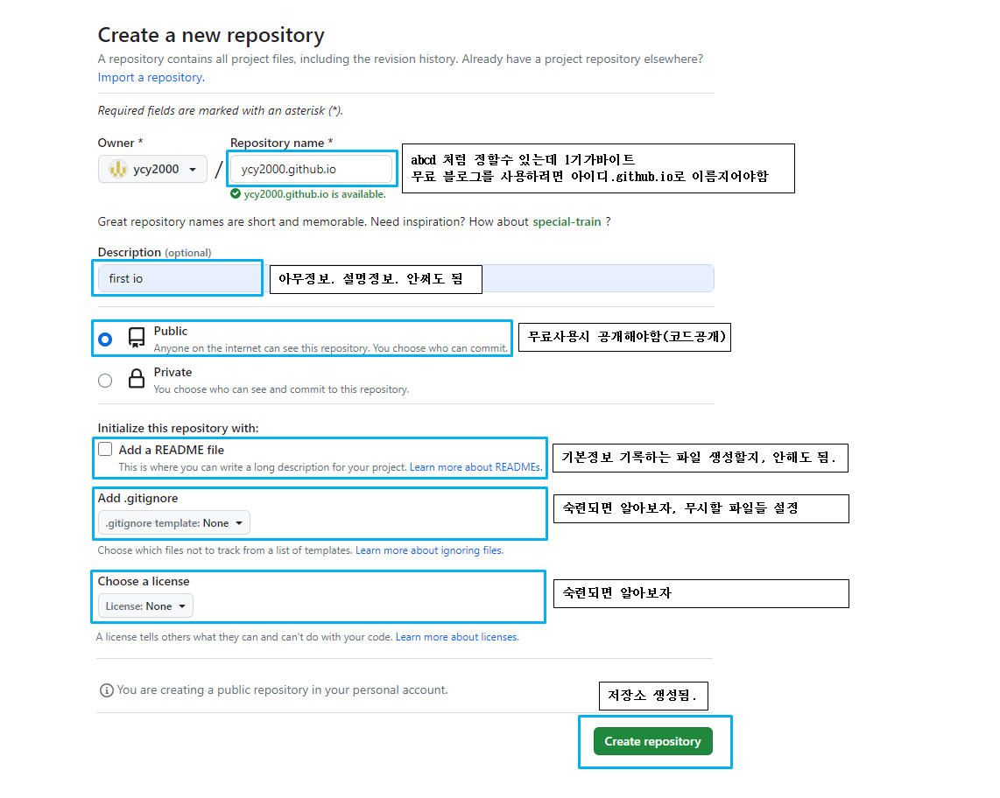

▢ h4 : 가장큰 네모 h4, 24px
1. h4 : 가장큰 순번 h4, 24px
▢ h5, 글자크기20px, 들여쓰기 30px
h5번들작, 글자크기20px, 들여쓰기 53px
1. h5, 글자크기20px, 들여쓰기 30px
h5번들작, 글자크기20px, 들여쓰기 53px
A. h5번들번들작, 글자크기20px, 들여쓰기 70px
① h5번들번들작, 글자크기20px, 들여쓰기 70px
▸ h5번들번들작, 글자크기20px, 들여쓰기 70px
1. h5번들번들작, 글자크기20px, 들여쓰기 70px
▸ h5번들번들작_들작, 글자크기20px, 들여쓰기 90px
바로글자 h5, 글자크기20px, 들여쓰기 30px
h5번들작, 글자크기20px, 들여쓰기 53px
li, 20px, 점표시 글자크기20px, 들여쓰기 30px
li_들작 : 점있는 li 밑에, 글자크기20px, 들여쓰기 60px
A. h5번들번들작, 글자크기20px, 들여쓰기 80px
① h5번들번들작, 글자크기20px, 들여쓰기 80px
▸ h5번들번들작, 글자크기20px, 들여쓰기 80px
1. h5번들번들작, 글자크기20px, 들여쓰기 80px
h5번들작, 글자크기20px, 들여쓰기 53px, ※li점있을때 조금 더 들여써야함
h5_들작기호들작 ▢ : & #9634; ▸ : & #9656
<h6> (16px)
1. 순번_제목 순서로 계속 부여
01_project_01_파일제목 (여기까지 파일이름 표시하는 기본, 세부적 내용이 많으면 다음 참고)
01_project_01_파일제목_01_소분류_01_소분류....(마지막에 순번으로)
2. css 클래스 아이디 이름부여 방식
3. script 변수이름 지정방식
자바스크립트 변수명에는 언더바(-)는 올 수 있지만 하이픈(-)은 올 수 없습니다.
var blue_book; //맞는 문법
var blue-book//틀린 문법
자바스크립트 변수명의 첫 번째 문자에는 숫자가 올 수 없습니다.
언더바(_), $ 등의 문자는 첫 글자로 자유롭게 올 수 있습니다.
var _babya;
var $nightball;
JavaScript 변수명 금지 단어 예약어
자바스크립트에서는 이미 변수명으로 설정된 몇 개의 고유한 단어가 있습니다.
또는 다른 프로그래밍 언어에서 자주 사용되는 고유 변수명의 경우도 사용하지 않는 것이 좋습니다.
참고자료 : https://dasima.xyz/javascript-variable-making-rule/
JavaScript 변수명 표기법
변수명의 표기법은 규칙은 아닙니다.
하지만 변수명을 잘 작성하면 가독성과 나중에 수정에 유리하기 때문에 몇 가지 통용되는 표기법이 있습니다.
Underscore 언더바(_) 표기법
변수명에 왜 언더바(_) 기호가 허용될까요? 변수명을 두 가지 이상의 단어로 설정해야 될 때 유용하기 때문입니다.
변수명의 단어를 언더바(_)로 이어서 표시할 수 있습니다.
var red_bear;
var big_money;
var F_22
Upper Camel Case
Camel Case란 마치 낙타의 등처럼 대문자와 소문자를 섞어서 쓰는 표기법을 말합니다.
Upper Camel Case는 둘 이상의 단어로 변수명을 정할 때 각각의 첫 단어를 대문자로 표시해서 구분하는 방식입니다.
JavaScript-Camelcase
var GoRush
var RedZerg
Lower Camel Case
var newMoon
var appleWatch
Lower Camel Case는 변수명의 첫 단어만 소문자로 입력하고 두 번째 단어부터 대문자로 입력하는 표기법입니다.
4. script 줄바꿈, vsCode 단축키와 기능키
vsCode : 빈 html에 ! 치고 tab 누르면 기본 html 골격이 완성됨.
태그만 입력하고 엔터 => 열고 닫는 태그 완성
div 엔터 => <div></div>
태그*개수 입력하고 엔터 => 개수만큼 열고 닫는 태그 완성
div*3 엔터 =>
<div></div>
<div></div>
<div></div>
선택자형식으로 : div>li[class="연습"]*3 을 입력하고 엔터치면
div 안에 (클래스가 "연습")자식li 3개 완성됨
<div>
<li class="연습"></li>
<li class="연습"></li>
<li class="연습"></li>
</div>
script : alert나, console.log의 화면출력되는 텍스트 줄바꿈 => '텍스트\n' 처럼 텍스트안에 '\n'을 텍스트값으로 전달
script : 코드가 길어서 줄바꿈 => 엔터 치고 다음줄에서 + 로 연결.
html,css,script : 선택줄 또는 범위 주석으로 감싸거나 생성 => ctrl + /
선택줄 한줄 정보 지우기 => shift + delete
범위선택안하고 => ctrl + c => 한줄 복사됨. 한줄은 드래그 안해도 됨.
1. 순서대로 읽되 script 만났을때, 에러코드 이후 실행 안되고 새롭게.

2. 함수안의 변수가 script에 기본실행 변수이면 위치에 상관없이 인식됨.
3. script파일 읽어올때 실행되는 동작 (project ul 높이 변경)
A. [F5]새로고침이나 html파일 링크로 이동시 script파일안의 함수를 제외한 모든 코드 실행됨.
B. project에 사용된 코드 : 여러개의 ul 높이를 비교하여 최대높이로 통일시키는 동작.
ul 높이 변경 실행 전,후 비교

4. script파일 이벤트리스너 실행 과정
A. 이벤트 감지하여 링크된 script파일에 정의된 내용을 실행한다.
B. 이벤트리스너란? html(화면)에서 일어난 일들을 감지하는 것.
C. 많은 이벤트 중에 'click' 이벤트 감지에 대해서 알아봄
D. 코드는 순서대로 실행된다는 것을 염두에 두고 이해하면 좋을 듯 하다.
E. 순서 : 이벤트감지할 변수지정 - 실행할 함수 만들기 - 이벤리스너 등록하기.
F. project에 사용된 이벤트리스너
1. entity, 특수문자, 코딩시... pre, 유니코드 https://blogpack.tistory.com/787
html 특수문자 : ... ①②③④⑤⑥⑦⑧⑨
< => < > => > 공백 : ▢ : ▢ ▸ : ▸ ○
ⓐⓑⓒⓓⓔⓕⓖⓗⓘⓙ
<pre> </pre> : pre안의 내용은 html에서 보이는 스페이스와 엔터(줄바꿈)을 보이는대로 표시해준다.
pre 태그안에서 여는태그만 <로 하면 많은부분 코드를 그대로 출력해줄수 있는듯.
script : alert나, console.log의 화면출력되는 텍스트 줄바꿈 => '텍스트\n' 처럼 텍스트안에 '\n'을 텍스트값으로 전달
script : 코드가 길어서 줄바꿈 => 엔터 치고 다음줄에서 + 로 연결.
html,css,script : 선택줄 또는 범위 주석으로 감싸거나 생성 => ctrl + /
선택줄 한줄 정보 지우기 => shift + delete
범위선택안하고 => ctrl + c => 한줄 복사됨. 한줄은 드래그 안해도 됨.
2. 엔티티(entity) 문자
>
▢ 참고 : innerText는 나의 텍스트노드 및 자식과 모든 하위 텍스트를 합친다.
▢ 참고 : 사용및 숙지는 firstElementChild, ElementSibling
1. 노드의 종류와 상위, 하위, 형제노드
A. 문서 노드(document node) : HTML 문서 전체를 나타내는 노드.
B. 요소 노드(element node) : 모든 HTML 요소는 요소노드이며, 속성노드를 가질 수 있는 유일한 노드임.
C. 속성 노드(attribute node) : 모든 HTML 요소의 속성은 속성 노드이며, 요소 노드에 관한 정보를 가지고 있음.
하지만 해당 요소노드의 자식노드(child node)에는 포함되지 않음.
속성 노드(attribute node)는 요소 노드(element node)의 속성이다.
속성 노드(attribute node)는 nextSibling, nextElementSibling으로 접근하는 부분이 아님.
D. 텍스트 노드(text node) : HTML 문서의 모든 텍스트는 텍스트 노드임.
E. 주석 노드(comment node) : HTML 문서의 모든 주석은 주석 노드임.
노드(node) 범위에서 : 상위, 하위, 형제노드 표현
1. parentNode : 부모 노드
2. childNodes : 자식 노드 리스트
3. childNodes.length : 자식 노드 개수
4. firstChild : 첫 번째 자식 노드
5. lastChild : 마지막 자식 노드
6. nextSibling : 다음 형제 노드
7. previousSibling : 이전 형제 노드
Element만 한정하여 : 상위, 하위, 형제 Element 표현
1. parentElement : 부모 요소(Element)
2. childElementNodes : 없나?
3. childElementCount : 자식 요소(Element)의 개수
4. firstElementChild : 첫 번째 자식 요소(Element)
5. lastElementChild : 마지막 자식 요소(Element)
6. nextElementSibling : 다음 형제 요소(Element)
7. previousElementSibling : 이전 형제 요소(Element)
2. 자식 노드의 접근 예제
3. 부모노드 접근은 parentNode(이거사용,짧으니), parentElementNode
1.appendChild 문법 https://shinyks.com/2023/07/javascript/%ec%9e%90%eb%b0%94%ec%8a%a4%ed%81%ac%eb%a6%bd%ed%8a%b8-appendchild-%ec%82%ac%ec%9a%a9-%eb%b0%a9%eb%b2%95/
2.
2.
2.
2.
1.html요소(태그) 구조

1. setAttribute() : 속성을 정한다. getAttribute() : 속성을 가져온다. (style 아님!!)
setAttribute() 문법
element.setAttribute( 'attributename', 'attributevalue' )
attributename에는 속성 이름을, attributevalue에는 속성값을 넣습니다.
예를 들어
document.getElementById( 'xyz' ).setAttribute( 'title', 'This is title' )
id 값이 xyz인 요소의 title 속성을 This is title로 정합니다.
만약 이미 속성값이 존재한다면 그 값을 지우고 새 값을 적용합니다.
사용 예
document.getElementById( 'abc' ).setAttribute( 'href', 'https://www.codingfactory.net' );
getAttribute() 문법
element.getAttribute( 'attributename' )
예를 들어
var jb = document.getElementById( 'xyz' ).getAttribute( 'title' );
id의 값이 xyz인 요소의 title 속성 값을 변수 jb에 저장합니다.
2. [인라인]style(CSS) 속성값을 변경하고 확인 해보기
▢ 확인하는것은 inline(html에 기록되어 있거나 코드로 등록된) style만 되고 적용하는 것은 된다.
A. 속성값 추가하기
[ style.css속성명 ]은 (개별적으로) 기존 정의 된 style에서 새로운 속성 추가(또는 덮어씀)된다.
var 변수 = document.querySelector('#결과');
console.log('추가전' + 변수.style.color); // 공백, 에러는 아님, 변수자체가 없으면 에러
변수.style.color='black'; // 추가는 언제든 가능.
console.log('추가후' + 변수.style.color); ==> black // 추가되면 확인 가능.
B. CSS 속성 여러개 추가하기 [인라인 스타일 모두 사라지고 대체됨]
element.style.cssText
ex)id="결과" style="color:black;display:block;height:200px;
var 변수 = document.querySelector('#결과');
console.log(변수.style.cssText); ==> color:black;display:block;height:200px;
inline스타일이 없는경우 ==> 공백. 에러는 아님.
변수.style.cssText="color:black;" //inline의 내용이 이것으로 대체됨
console.log(변수.style.cssText); ==> color:black;
3. getComputedStyle( )으로 속성값 가져오기
inline으로 정의된 style 속성 뿐 아니라 CSS 파일 내 stlye 속성도 함께 가져온다.
모든 상태가 반영된 화면상의 스타일 값이다. inline값과 안맞을수 있음.
▢ 사용법
var 변수 = document.getElementById('결과');
var 스타일정보=getComputedStyle(변수); ==> 이곳에 모든 상태정보가 담겨 있다.
스타일정보.height; 또는 스타일정보.width; 확인 가능.
1. 이해를 쉽게 하기 위해서 ** 노드 **에 대해서 간단히 보고오길 추천.
2. 이해를 쉽게 하기 위해서 ** 선택자, 선택연습 ** 에 대해서 간단히 보고오길 추천
3. 메소드중 : 단일노드요소 선택, 노드요소의집합 선택 구분
4. querySelector(요소노드), querySelectorAll(요소노드들) 차이
#결과 가 1개 있을때 querySelectorAll로 변수지정시. (변수.style 사용안됨??)
var 변수=document.querySelectorAll('#결과'); 형식으로 변수를 지정하였을때. 배열로 들어간다.
console.log(변수.length); ==> 1
console.log(변수(1)); ==> 에러나고 다음코드 취소됨.
console.log(변수[0]); ==> 요소 반환
#결과 가 1개 있을때 querySelector로 변수지정시. (변수.style 사용가능??)
var 변수=document.querySelector('#결과'); 형식으로 변수를 지정하였을때. 요소반환일때
console.log(변수.length); ==> undefined (에러는 아님)
console.log(변수(1)); ==> 에러나고 다음코드 취소됨.
console.log(변수[0]); ==> undefined (에러는 아님)
object.onclick = function() { myScript };
1.javascript는 한줄씩 실행된다? 이것저것

2. if (변수 !== null) {}
1. null과 undefined
어떤사람의 키를 적어놨다라고할때,
A. 어떤사람자체가 존재하지 않을때 null,
B. 사람은 있지만 키라는 항목이 없을때 null
C. 사람은 있지만 키가 안적혀 있을때 undefined
※ text-align: center; ==> 내가품고 있는 요소중 text(인라인속성)요소들을 가운데 정렬한다
2. 나(블록)의 가운데정렬 {margin: 0 auto;},
inline속성인 경우 display:block; 으로 정해놓고 해야한다.
블록속성이 폭이 정해지고 좌우여백이 있다면 가운데정렬이 된다.
auto ==> 가운데 정렬 의미. {margin:auto;}로 해도 가운데 정렬된다,
0 ==> 위아래 마진을 0으로 한다는 의미 (0px가 정확하고 0이 아니면 단위(px)등을 꼭 써줘야 한다.
※ 0부분 보충설명
▸ 20px 10px 15px 10px 형식으로 쓰면 위-우측-아래-왼쪽의 폭순서이고.
▸ 10px 하나만쓰면 위+아래 의미, 10px 20px 두개쓰면 위아래 10px, 좌우 20px라는 의미
▸ 20px 10px 15px 형식으로 3개만쓰는경우는 왼쪽이 빠져있는 상태이고 오른쪽 오른쪽설정값(두번째꺼)을 따라간다.
{margin: 10px auto;} : 위아래 마진을 10px 준다는 의미.
margin-top, margin-bottom을 따로 다음순서에 설정해줘도 된다.
좌우마진을 주는순간 가운데정렬 깨진다. margin-left, margin-right
O : {margin:0 auto} = 나를 가운데 정렬한다. margin-top, margin-bottom은 설정가능
O : {margin:10px auto} 위아래 마진을 10px 준다는 의미
O : {margin:0 auto; margin-top: 10px;} 위 마진만 줄 경우, 따로 다음위치에 써주면 된다.
O : {margin:auto; margin-top: 10px;} 위 마진만 줄 경우, 따로 다음위치에 써주면 된다.
X : {margin:10px 300px auto} 위 10px, 왼쪽 300px 띄우기만 한다.
참고로 {margin:10px 300px;} => 상하10px, 좌우300px씩 마진준다는 뜻.
왼쪽마진을 나중에 줘보니 안된다. {margin:0 auto;margin-left: 50px;}
※ 좌우에 해당하는 곳에는 마진이 지정되면 가운데정렬이 꺠지는 듯하다.
3. length (querySelector, querySelectorAll 사용시 특징)
기본적으로 length는 문자열의 길이를 말한다.
'abce'.length => 4 , ''.length : 0
※ querySelectorAll은 length값으로 선택된 요소들의 개수를 가진다. 없을때 0, 1개일때1, 3개일때 3, ...
※ querySelector는 length값이 없다. null을 반환하고 코드는 진행된다.
※ null과 undefined, 어떤사람의 키를 적어놨다라고할때
A. 어떤사람자체가 존재하지 않을때 null,
B. 사람은 있지만 키라는 항목이 없을때 null
C. 사람은 있지만 키가 안적혀 있을때 undefined
legnth : 문자열의 길이, 요소집합(querySelectorAll 일때) 개수
console.log(document.querySelector('#결과').length); 단독요소일때 undefined
document.querySelector('#결과')는 하나의 요소를 가리킨다. 요소의 집합이 아니다.
var 변수= document.querySelectorAll('#결과').length);
해당요소를 찾을수 없을때 length 값 : 0 반환
console.log(변수.length); 단독요소일때 All사용시 1
console.log(변수.length); All사용시 없을때 0
console.log(변수.id.length); 같은 id 2개일때, All사용시 2
console.log(변수.className); 공백(없을때)
console.log(변수.className.length); 0 (없을때)
console.log(변수.className.length); 하나 또는 여러개일때 모든 글자수 공백포함
console.log(변수.style); 집합정보
console.log(변수.style.width); inline에 없으면 공백
console.log(변수.style.width); inline에 width:20px면 20px
console.log(변수.style.width.length); inline에 없으면 0
console.log(변수.style.width.length); inline에 width:20px면 4 (문자길이)
4. getComputedStyle() 사용법
var 변수 = document.querySelector('#content_편집중');
var 변수의스타일정보 = getComputedStyle(변수);
변수의스타일정보.style.속성명 으로 현재상태를 확인할 수 있다.
인라인 스타일이 아닌 현재상태라는 것을 참고
project에 getComputedStyle()
A. 맨위로 스크롤해야되는 요소의 위치값을 숫자로 알아야 했다.
B. 같은 id가 두개였고 두번째꺼 [1] 의 위치값을 알아야 했다.
C. 결과가 문자열이었기 때문에 추출한 숫자형식문자열을 숫자로 변환하여 비교한 후에 마지막 결과에 px를 추가하여 전달.
D. header가 높이(fix높이)를 차지하지 않고 있어서 보이는 header 높이(fix높이)값 만큼 아래로 더 이동해야 함.
var 스크롤요소들=document.querySelectorAll(아이디); //2개
if (스크롤요소들[1]) { //두번째가 있다면.
var target = 스크롤요소들[1];
//window.scrollY 문서의 최상단 위치값(요소의 위치값에 더해야함?)
var 절대좌표 = window.scrollY + 스크롤요소들[1].getBoundingClientRect().top; //현재위치
var fix높이 = getComputedStyle(document.querySelector('header')).height
fix높이 = fix높이.replace('/[^0-9]/g', ''); //숫자형식만 남기기
fix높이 = parseInt(fix높이); //숫자형식으로 변환
//아래코드는 절대좌표 - fix높이의 위치를 맨위로 스크롤하라는 의미.
window.scrollTo({ left: 0, top: 절대좌표 - fix높이, behavior: "smooth" });
}
5. project 스크롤이동 사용 코드
var 스크롤요소들=document.querySelectorAll(아이디); //2개
if (스크롤요소들[1]) { //두번째가 있다면.
var target = 스크롤요소들[1];
//window.scrollY 문서의 최상단 위치값
var 절대좌표 = window.scrollY + 스크롤요소들[1].getBoundingClientRect().top; //현재위치
var fix높이=getComputedStyle(document.querySelector('header')).height
fix높이=fix높이.replace('/[^0-9]/g', ''); //숫자형식만 남기기
fix높이 = parseInt(fix높이); //숫자형식으로 변환
//아래코드는 절대좌표 - fix높이의 위치를 맨위로 스크롤하라는 의미.
window.scrollTo({ left: 0, top: 절대좌표 - fix높이, behavior: "smooth" });
}
return;
return true;
return false;
return x;
return x + y / 3;
count === 5 : 값과 형식이 모두 일치
count == 5 : 값이 일치
count = 5 : 새로운 값을 대입
function exer() {
for (var count=1; count++) { //무한반복
console.log(count + 'A'); // 1 2 3 4 5
if(count === 5) {
return; // 멈춤
} // (1) count === 5 END
console.log(count + 'B'); // 1 2 3 4
} // (2) for() END
console.log(count + 'C'); // for문 끝났으므로 절대 나타나지 않는다.
} // (3) counter() END
counter(); 1A 1B 2A 2B 3A 3B 4A 4B 5A
1. 스크립트에 사용한 코드. 정리필요
// 시작하면 바로 실행됨 !!!! ul_height_change
var con = document.querySelectorAll('[title="버튼과ul"]');
var ul들 = document.querySelectorAll('[title="버튼과ul"] ul');
var arr_ul들 = [];
var 버튼높이=0;
var 가로개수=0;
var 서너개ul높이=[];
var 서너개ul적용높이=0;
var 적용개수=0;
for (var i=0 ; i < ul들.length; i++) {
//현재 높이 숫자로 담는동작
if (i == 0) {
메세지 = (i+1) + '번째ul높이 : ' + getComputedStyle(ul들[i]).height + '\n';
arr_ul들[i]=parseFloat(getComputedStyle(ul들[i]).height);
}
if (i !== 0) {
메세지 += (i+1) + '번째ul높이 : ' + getComputedStyle(ul들[i]).height + '\n';
arr_ul들[i]=parseFloat(getComputedStyle(ul들[i]).height);
}
//시작시 버튼높이 다르니 줄수 1추가로 시작.
if (버튼높이!==con[i].getBoundingClientRect().top) {
서너개ul높이=[];
// 가로개수만큼의 정보에서 최대값을 구해야됨
if (i!==0) {
for (var j=1; j < 가로개수; j++) {
서너개ul높이.push(arr_ul들[i-가로개수+j])
}
서너개ul적용높이=Math.max(...서너개ul높이);
for (var j=1; j < 가로개수; j++) {
arr_ul들[i-j]=서너개ul적용높이;
}
적용개수=적용개수+서너개ul높이.length;
}
가로개수=1 //달라지자마자자
버튼높이=con[i].getBoundingClientRect().top;
}
if (버튼높이==con[i].getBoundingClientRect().top) {
가로개수=가로개수+1
}
}
//for문끝나고 ul들.length < ul들.length일때 마지막 작업
if (ul들.length > 적용개수) {
서너개ul높이=[];
for (var k=적용개수; k < ul들.length; k++) {
서너개ul높이.push(arr_ul들[k]);
}
서너개ul적용높이=Math.max(...서너개ul높이);
for (k=적용개수; k < ul들.length; k++) {
arr_ul들[k]=서너개ul적용높이;
}
적용개수=적용개수+서너개ul높이.length;
}
for (var i=0 ; i < ul들.length; i++) {
ul들[i].style.height=arr_ul들[i] + 'px'
}
2. 설명
① 변수들 기본 3가지.
▸ var con = document.querySelectorAll('[title="버튼과ul"]');
버튼과ul이 묶어져 있는 것. 상단에 맞춤 정렬 해놨기 때문에
높이(getComputedStyle(ul들[i]).height)가 다르면 다른 줄로 인식하면 되겠다.
▸ var ul들 = document.querySelectorAll('[title="버튼과ul"] ul');
버튼 말고 ul만!! 이것의 높이를 조정하는 작업이다.
▸ var arr_ul들=[];
높이 조정하려는 모든 ul들의 높이를 담아두고
가로줄마다 최대높이를 구해서 최대높이로 바꿔줄 것이다.
담을 때와 변경할 때는 숫자로 하고, 최종 적용시 'px' 추가.
② 버튼높이 달라지면 작업해야할 유기적으로 엮여 있는 변수들
※ 버튼높이, 가로개수, 서너개ul높이[], 서너개ul적용높이
※ 과정 설명
가. 버튼높이 초기값 0, 버튼높이가 이전높이와 같을 때와 다를 때,
▸ 버튼높이 달리질 때 코드가 먼저 나오고, 같을 때 코드가 나중에 나온다.
처음 시작할 때 버튼높이 초기값이 0이므로 바로 달라지는데
달라질 때는 달라지기 전의 개수를 파악해서 높이를 조정해주는 작업을 하게 된다.
처음 시작할 때 배열순번[0]일때는 이 작업이 필요 없으므로 조건이 'i!==0 이다'
달라질 때 달라지기 전의 개수를 파악해 높이를 조정한 후에 '가로개수=1'로 지정
▸ 버튼높이 같을 때는 '가로개수=가로개수+1'해준다. 이코드가 나중에 나온다.
나. 높이가 달라지면 '서너개ul높이=[]' 배열을 초기화 해주고,
▸ '가로개수만큼 ul의 높이를 '서너개ul높이=[]' 배열에 추가'
'서너개ul높이=[]' 배열에 담은값의 최대값 구하기.
서너개ul적용높이=Math.max(...서너개ul높이);
최대값을 해당 순번의 arr_ul들[i-가로개수+j] 배열에 넣기(변경하기)
적용한 개수를 파악해둔다.'적용개수=적용개수+서너개ul높이.length;'
가로개수를 1로 지정하기. 버튼높이 지정하기. 순서이다.
다. 버튼높이가 같다면 '가로개수=가로개수+1'만 하면 된다.
③ 마지막 줄 작업은 따로 해줘야한다.
가. 코드를 보면 바로 이해할 수 있들 듯.
④ 담아둔 ul 높이들을 적용하면 끝.
4. 5.가 주요정보. add, commit, push, pull, 두군데서 gitHub 저장소 관리방법
▢ 이해가 부족하여 기초적이고 필요한것만 메모해놓겠음
▢ git : 분산 버전관리 시스템, 프로그램이다. 로컬저장소와 원격저장소 사이에서 파일을 관리한다.
▢ gitHub : 원격저장소 서비스업체이다 다른 것도 많이 한다. git이름이 앞에 있다고 관련짓지 말자.
※ gitHub에서 clone 하면 숨김깃폴더가 딸려온다. 바로 연결된것인가? git init 원격저장소연결등 필요없는건가?
▢ git 프로그램을 이용해 원격저장소와 로컬저장소간 정보이동을 관리한다.
▢ 원격저장소의 main(master)에 올리고 내려받는 것만 알려고 한다.
▢ gitHub에 원격저장소 만들기, gitHub원격저장소와 연동할 로컬폴더에 git설치, 정보 주고 받는 방법.
1. git 기본 설명

2. git 설치후 "git bash" 명령창 사용하여 이름과 이메일 등록은 한번만 하면된다.
git 폴더마다 따로 지정할 수 있고 다른 설정도 많지만 global user.name과 global user.email만 설정하겠다.
git 설치후, global user.name과 global user.email 설정
▸ global user.name 등록 명령어
$ git config --global user.name "ycy2000"
▸ user.name 확인 명령어
$ git config --global user.name ==> 등록된 것 없다면 공백, 있다면 ycy2000
▸ user.email 등록 명령어
$ git config --global user.email "ycy2000@naver.com"
▸ user.email 확인 명령어
$ git config --global user.email ==> ==> 등록된 것 없다면 공백, 있다면 ycy2000@naver.com

3. github에 원격저장소 만들기. (내용이 없으면 브런치(master)도 없는 상태)
※ gitHub 안에 git이 깔려있다고 이해한다. 로컬과 연결없이도 파일을 드래그해서 넣을수 있다.(10개씩만 됨)
A. github 회원가입 : 회원가입시 email, ycy2000@naver.com,
가입후 아이디는 ycy2000 또는 가입시 email, 비번, dxxxix3xx8
▸ create repository (저장소 생성)

▸ github에서 빈 레포지터리 생성하면 당연히 git을 활용할 것이기 때문에 간단한 git 명령어 설명을 해준다.
4. git 시작, 로컬폴더와 gitHub 원격저장소 연결, 정보 올리기. gitHub 원격저장소가 비어있을때 예시.
A. git init (해당 폴더를 git을 활용해서 관리하겠다는 선언), 한번만 하면된다. 해제하려면 숨김폴더 .git을 삭제하면 된다.

B. 원격저장소 연결. 연결확인 방법. 연결해제 방법.

C. 정보 주고 받기, add, commit, push

5. clone
깃허브에 저장소에 정보가 있는 경우 땡겨오고 싶을때.
$ git clone "https://github.com/ycy2000/exer.git"
그러면 현재폴더에 원격저장소이름의 폴더가 생기면서 그 폴더 안에 깃폴더와 내용물이 담겨있다."
폴더안에 폴더가 깃폴더인데.... 하나더 루트폴더에서 git init없이 clone 하면되는건가??
git add . ==> git commit -m "메세지" ==> git push origin master : 로컬에서 원격에 올리기
로컬 빈폴더 git init, git remote add origin "https://github.com/ycy2000/ycy2000.github.io.git",
git pull origin master : 가지고오기
document.body.offsetWidth : 화면넓이 갤탭s7fe 1205 >> 1210보다 작아지면?
document.body.clientWidth : 화면넓이
document.body.scrollWidth : 화면보다 넓은 것이 있을때 넓이

1.